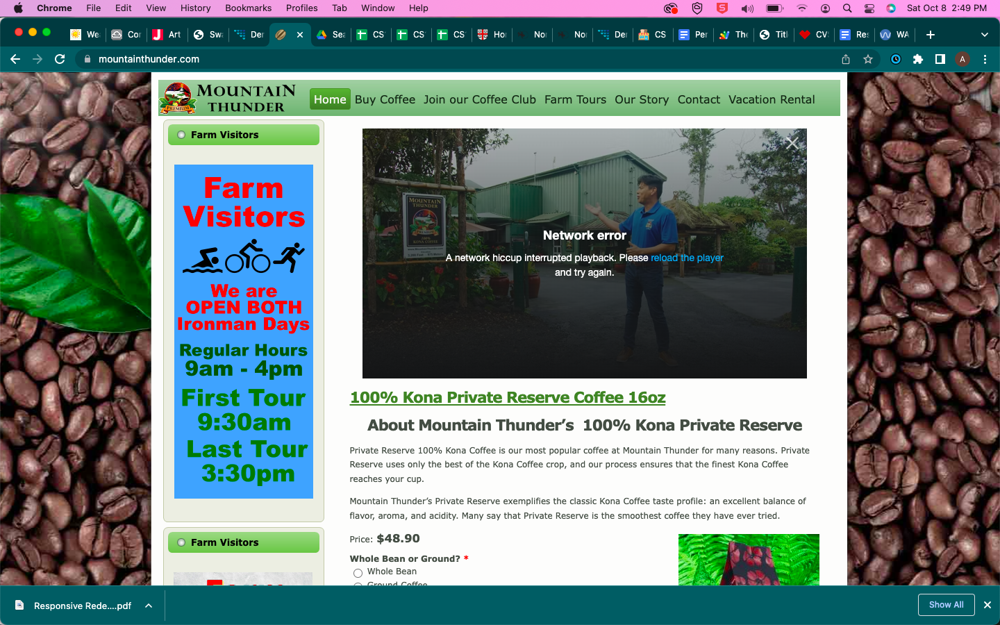

The Original Website
The original website can be found here. Mountain Thunder Plantation is a coffee farm on the big island of
Hawai'i; there website serves both information and business purposes as you can order coffee from the site.
When I was first looking at the site, there was a second alert on the home page; an image of that site is shown below.

Issues with the Original Website
Learnability
- There are too many tabs for exploration for drop down menus
- If you want to order you first have to login, but you can get to the ordering page without doing so
- because there is a side menu bar and a top menu bar it just leaves too many places for people to have search for the information they are trying to find
- If you are trying to find information as well, there are dead radio buttons that don’t lead to anywhere and you can’t actually select anything from them.
- The spacing on the top menu bar is also confusing (is it Farm, Tours or Farm Tours)
- They are suffereing from a barage of infromation that it is overwhelming for new users to learn to use
Memorability
- The double navigation methods would be an issue
- Remembering to scroll down to the bottom to sign in,even if you know what you are doing, it is a pain to scroll to the bottom
- Still the too many links might be hard for users to remember which page they clicked on to get where
Design Issues
- Overcrowding
- Doubled information on multiple pages (the video on the home page is also on the tour page, which is why I removed it)
- Unclear Hierarchy for ordering the coffee on the home page (which doesn't even make sense to have ordering on the home page when there is a shopping page)
- Inconsistent font size and usage
Accessibility
WAVE Report
The WAVE report for mountain thunder can be found here Below is the summary of results.
- 40 contrast errors
- A few cases of missing alt text, but generally they do a very good job
- A few cases of too small text
- Multiple links that do not lead anywhere
- The radio buttons for ordering do not have a group
- Empty buttons and redundant links
I agree with this report especially on the contrast errors. The website is hard to read because of the style chosen
I kept this in mind while redesigning.